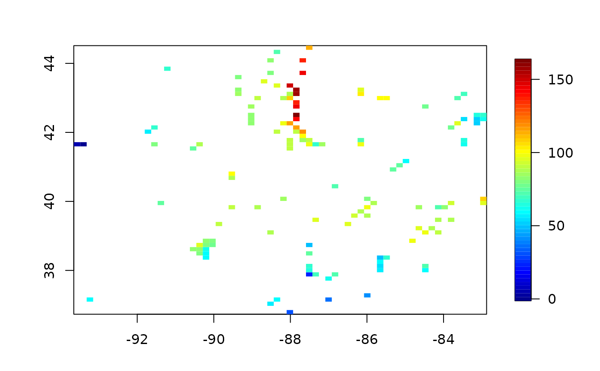

ozone2.RdThe response is 8-hour average (surface) ozone ( from 9AM-4PM) measured in parts per billion (PPB) for 153 sites in the midwestern US over the period June 3,1987 through August 31, 1987, 89 days. This season of high ozone corresponds with a large modeling experiment using the EPA Regional Oxidant Model.
data(ozone2)The data list has components: <s-args> <s-arg name="y"> a 89X153 matrix of ozone values. Rows are days and columns are the sites. </s-arg> </s-arg name="lon.lat"> Site locations in longitude and latitude as a 153X2 table </s-arg> <s-arg name="chicago.subset"> Logical vector indicating stations that form teh smaller Chicagoland subset. (see FIELDS ozone data set) </s-arg> </s-args> <s-section name="Reference"> Nychka, D., Cox, L., Piegorsch, W. (1998) Case Studies in Environmental Statistics Lecture Notes in Statistics, Springer Verlag, New York
data( ozone2)
# pairwise correlation among all stations
# ( See cover.design to continue this example)
cor.mat<- cor( ozone2$y, use="pairwise")
#raw data image for day number 16
good<- !is.na( ozone2$y[16,])
out<- as.image( ozone2$y[16,good], x=ozone2$lon.lat[good,])
image.plot( out)
